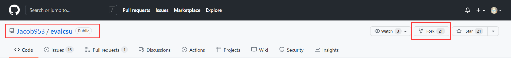
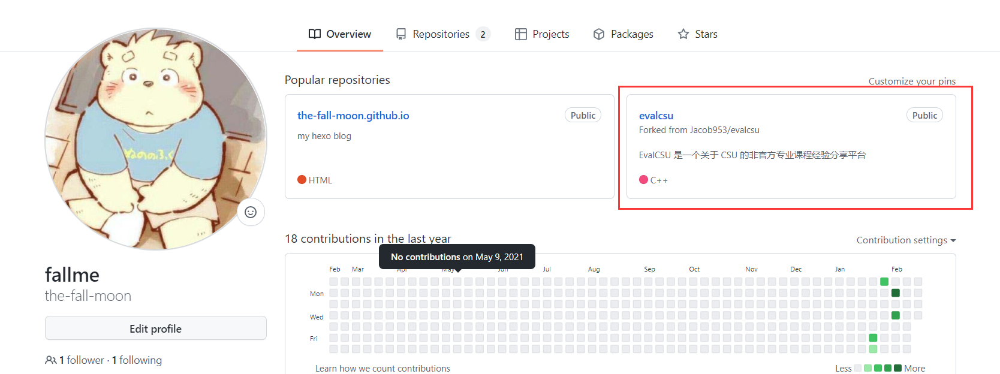
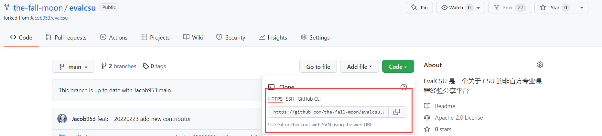
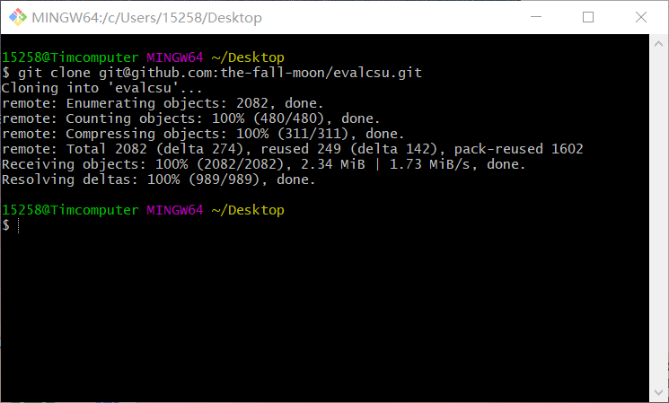
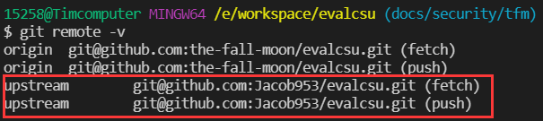
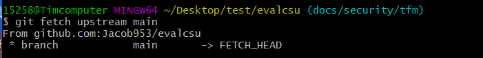
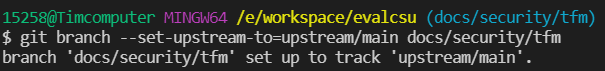
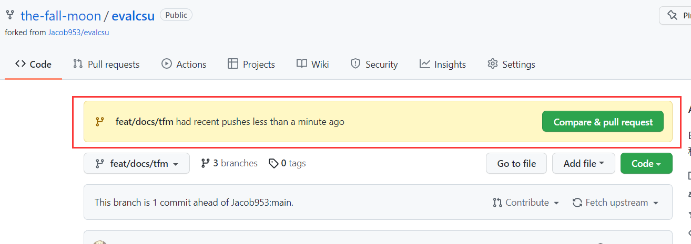
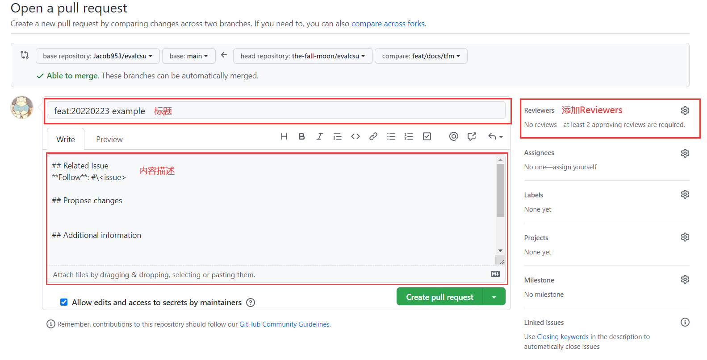

Git 新手指南
本指南本着以简易明了的语言向 Git & Github 新手解释基本概念与流程，如有错误和疏漏，请以谅解和更改。
更多 Git 相关操作，请参考 Git Helper
零、理解基础概念
Git 中需要理解基础概念： - 工作区 - 暂存区 - 仓库 - 版本 - 分支
工作区
工作区是使用主机进行代码和文件编写的区域。使用者若对文件进行增删改操作，其均发生在工作区。
暂存区
暂存区是暂时存储工作区修改操作的区域。使用者所有的文件改动均需要先添加入暂存区（对应操作为 add ），再由暂存区提交到当前仓库（对应操作为 commit ）。
需要注意的是，暂存区可以包含多个文件的多次改动，可以在工作区修改文件后，进行多次 add 操作，然后再进行一次 commit 操作，将多次同目的的文件修改包含在一次 commit 之中。
仓库
Git 仓库分为两类仓库：本地仓库和远程仓库。
本地仓库，存储在本地主机上，里面所有文件皆被 Git 通过 .git 文件夹进行管理。暂存区提交 commit 后，对应的文件改动会最终保存在本地仓库之中。
远程仓库，代码和文件均寄存在远端服务器上，如 Github 和码云。其也是多地办公、多人协作办公以及文件开源的基础之一。
版本
仓库又称为版本库，在 Git 仓库中的每一次 commit 操作均可以成为一次版本更新， Git 仓库也会存储每次版本的信息，以便日后根据版本对仓库进行回滚和查看等操作。
默认情况下，在 Git/Github 建立仓库时，会建立主分支 main 分支，在其中所有的版本按提交时间先后呈线性排列，由 HEAD 指针和 main 指针共同指向最新的版本，可以通过修改 HEAD 指针的指向改变当前仓库的版本。
值得一提的是， Git 是通过根目录下的隐藏文件夹 .git 文件夹进行版本控制操作和其他操作的，所以谨慎删除该文件夹！
分支
分支是 Git 多人协作的基础，可以通过建立不同的分支，使同时间多人对仓库的修改和操作便利化。
在多人协作的情况下，为了避免冲突，需要建立不同的分支。在使用建立分支的操作（ branch ）建立分支 your_branch 后，当前 HEAD 指针所指的版本会添加一个 your_branch 指针指向当前版本。在使用切换分支的操作（ checkout ）后，HEAD指针会指向 your_branch 指针所指向的版本，并后续跟随 your_branch 指针一同移动，而 main 会停留在切换分支前 HAED 指针所指的版本上。
在完成在对应分支上的工作后，可以通过 merge 操作将该分支合并至主分支 main 。
一、Pull Request 的基本流程
注意：请尽量看完理解基础概念再跟随本部分进行操作。
克隆目标仓库代码
- 在目标仓库点击
Fork按钮，可以生成一个属于自己的同名仓库，并与上游仓库关联。

- 操作后，可以在自己的主页看到克隆的仓库

克隆代码到本地
- 进入自己的仓库后，点击绿色的
Code按钮，获取本仓库的 SSH 链接。
注意：使用 SSH 链接需要先在本地主机上和自己的Github账户上，部署 SSH key 免密登入。该步骤可参考网络教程或官方教程 Connecting to GitHub with SSH 完成。

- 在你打算存放该代码仓库的目录下，打开
Git Bash终端，输入命令,即可在本地获取到对应代码仓库，并自动与远程仓库关联。
git clone git@github.com:<github_account>/<repository_name.git>
e.g. git clone git@github.com:the-fall-moon/evalcsu.git

创建自己的分支
- 以当前分支为基础新建分支并切换：
git checkout -b <branch_name>
e.g. git checkout -b docs/security/tfm
- 分支名命名规则：
<type>/[faculty]/<your_github_id>
e.g. docs/security/tfm
<type> 建议参考提交类型
提交修改到本地仓库
- 在修改完毕仓库中的代码后，可以通过两种方式将修改后的文件添加到暂存区：
- 添加单个文件到暂存区：git add \
-
添加所有修改后的文件到暂存区：git add -A
-
把所有提交到暂存区的文件提交到仓库：
git commit -m "<type>[optional scope]: <description>"
e.g. git commit -m "docs:20220225 update evaluation/security"
注意：尽量单次 commit 完成单个任务，不要一个 commit 完成了多个任务或多个 commit 完成单个任务。
拉取最新版本
添加上游仓库 upstream 并关联到你的分支，以便利拉取上游仓库的最新版本.
- 在本地添加上游仓库 upstream ，可用 git remote -v 命令查看是否添加成功。
git remote add upstream_name git@github.com:github_account/<repository_name.git>
e.g. git remote add upstream git@github.com:jacob953/evalcsu.git

- 去上游仓库拉取一次你所需保持跟踪的分支 upstream/main 。
git fetch <upstream_name> <branch_name>
e.g. git fetch upstream main

- 将 upstream/main 设置为你当前分支所要跟踪的远程仓库分支。
git branch -u <upstream_name>/<branch_name>
e.g. git branch -u upstream/main

- 在设置过的分支使用 git pull 命令简化拉取最新版本的操作。
提交修改到远程仓库
- 推送当前分支最新的提交到自己的远程仓库。
git push <remote_repository>
eg: git push origin
注意：若在此使用 git push -u origin docs/security/tfm 命令，则会导致 origin 被设置为当前分支要同步的远程仓库，而不是拉取最新版本中设置的 upstream 。
远端合并分支
- 打开 GitHub，从个人仓库中选择
New pull request按钮

- 选取本仓库的主分支与你修改过的分支作为比较对象，依照以下方式描述你的修改：
- 在标题栏中按照
<type>[optional scope]: <description>的方式命名标题，要求简洁明了，不可缺失 - 在 Related Issue 中链接到相关 Issue，不可缺失
- 在 Propose changes 中简述你的改动，不可缺失
- 在 Additional information 中添加额外信息，可选
- 在 Checklist 中检查你的任务，不可缺失，但不要求一定完成
- 在 Screenshoot 中贴上对应截图
- 在 Reviewers 处添加数个检查者

- 点击
Create pull request按钮创建你的合并请求
二、部分常用的 git 命令补充
初始化
- 从零初始化本地仓库：git init
删除文件
- 从文件夹中删除文件：rm \
- 从工作区中移除文件：git rm \
分支操作
- 列举所有的分支：git branch
- 重命名分支：git branch -m
- 以当前分支为基础新建分支并切换：git checkout -b
- 单纯地切换到某个分支：git checkout
- 强制删掉特定的分支：git branch -D
- 合并分支：git merge
查看提交的修改
- 查看提交的历史记录：git log
- 查看简易信息的历史记录：git log --oneline
- 查看附带索引值的简易历史记录：git reflog
撤回提交的修改
- 将暂存区文件回滚至工作区：git checkout
- 将仓库最后一次提交回滚至暂存区：git reset HEAD^1
- 将按索引值回滚至仓库的某次版本：git reset